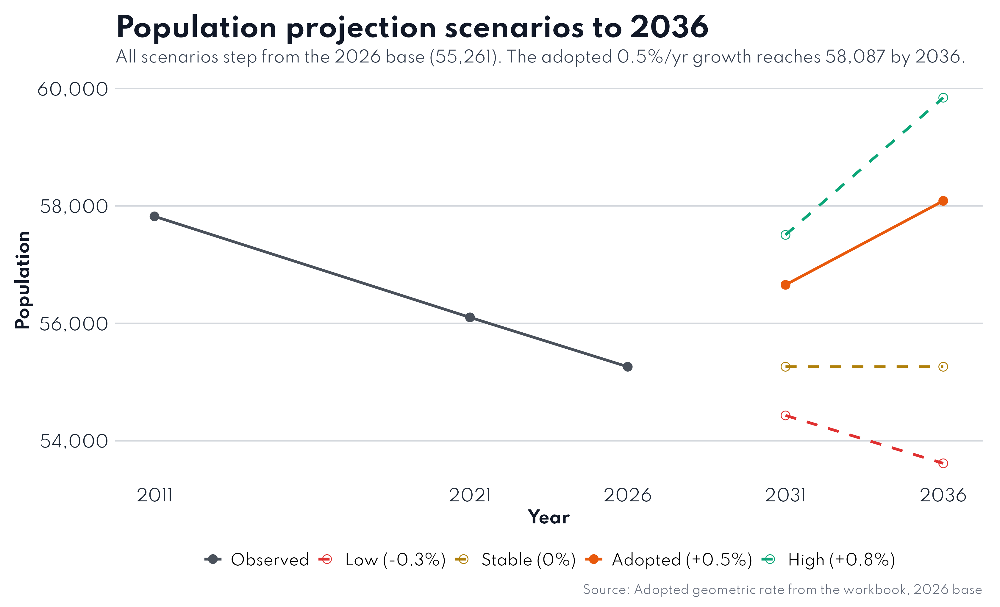

Analysis & diagnosis from evidence to planning concept.
How did we move from data to planning decisions? Data → Analysis → Finding → Implication → Strategy → Proposal → Project.
📈 Pop 2041 projection📏 DUDBC gaps🗺️ Suitability⚖️ SWOT
Analysis
Future forces → Development concept
In Brief: Four forces shape Baglung's future; they drive population, demand, suitability and SWOT — leading to Protect the core, grow the corridor, hold the hills.
4.1
Four forces
Ageing. The 60-plus share rises from 13.2% toward ~20% by 2036; old-age dependency doubles from 21 to ~32 elders per 100 workers. Wards 9–13 already pass 16%. Youth drain. Of residents absent abroad, 70.5% left for foreign employment and 80.7% are aged 15–34 — the working-age pool keeps leaking. Fragmentation. Household size fell from 3.81 to 3.52; housing demand climbs against a flat population, adding 700–1,100 dwelling units by 2036. Core pull. Bazaar wards 1–4 and 14 hold 53% of the population on 16% of the land; Ward 4 grew 40.1% over the decade while Ward 11 lost 31.9%.
4.2
Population 2041
Adopted path: +0.5% geometric growth from the 2026 base of 55,261 → 56,656 (2031) → 58,087 (2036) → 59,556 (2041). Cohort (no-migration) ceiling 63,496 by 2031; low path (−0.3%) ≈53,600 by 2036; high path (+0.8%) 59,844. Sizing line: ~16,800 households by 2036, ~17,100 by 2041 at size 3.45.

Population scenarios to 2041 Scenarios — source + year on chart.Demand vs DUDBC norms Gap analysis — service-level comparison.
Suitability · SWOT · Concept
4.4 SuitabilityWeighted overlay
Weights: slope 30% · flood risk 25% · landslide 20% · fault distance 10% · land cover 10% · road access 5%. Classes: Very Low (1.0–1.8) → Very High (4.2–5.0). Static maps in Spatial.
SWOTSynthesis
Strengths, weaknesses, opportunities and threats — feeds the development concept.